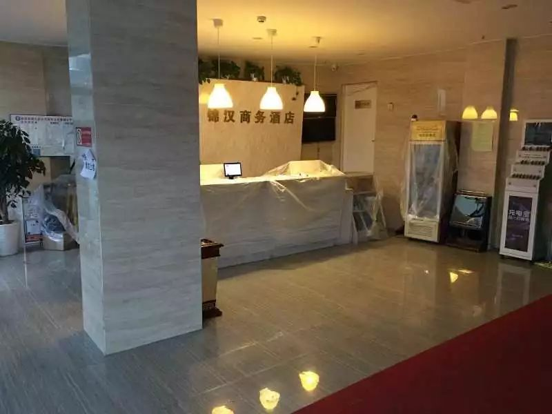

武汉医护酒店支援联盟发起人：我们一群人干了良心事
原文链接 备份链接 “我的酒店当时空着，我就想，拿出来给医护人员住，想法很简单。” 全文2514字，阅读约需5分钟 为给奋斗在抗击疫情一线的医护人员提供免费和方便的住宿，除夕夜（1月24日），数百位武汉酒店业内人士自发组建武汉医护酒店支 …
澎湃新闻记者 李思文 实习生 胡友美

张禹家给酒店内设备罩上防护膜，每天消毒两次。受访者供图
张禹家已经独守酒店24天了，每天一个人既当前台又当清洁员。天亮时，他目送医护人员急匆匆离开，到了深夜，又为疲惫的他们打开一扇门，这是他认为目前最有意义的事情。
除夕夜晚，在和家人简单沟通后，90后的张禹家决定开放已经停业2天的酒店，加入“武汉医护酒店支援联盟”，免费给医护人员提供住宿和服务。一周后，因人员疲惫，联盟内的多数酒店都纷纷退出，但张禹家却坚持了下来，继续守护着50位入住的医护人员。

入住医护人员送给张禹家的水果和罐头。受访者供图
一个人守着一个酒店
91年出生的张禹家，在武汉市第一医院旁经营着一家名为锦汉的商务酒店，酒店两三公里的范围内，有武汉协和医院和第四医院。今年的大年三十（1月24日），一张医护人员在科室内吃饭，因压力过大而痛哭的照片，触动了张禹家和他的家人。
“当时我母亲说我们离医院近，提议把酒店开放给医护人员，给他们提供一个休息的地方。”张禹家说，听到母亲的提议，家人都非常支持。但当时，张禹家的酒店已经停止营业了2天，服务员们也都已经放假回家，一家人就谁去管理酒店的问题，产生了争执，“我父亲听到后立刻要去，但我觉得自己最年轻，抵抗力强，最终决定我去看店。”
同样是这个除夕夜，武汉数百位酒店业内人员自发组建了“武汉医护酒店支援联盟”，免费给医护人员提供住宿和服务，张禹家得知后立即报名参加。大年初一早上，在打扫并消毒了整个酒店后，他敞开了大门，开始接待医护人员。当天中午到次日凌晨，酒店就入住了40名协和医院的医护人员。
“他们有些医护人员离家比较远，封城后没有公共交通，回家不方便，还有些医护人员担心把病毒带回家，就住在酒店里。”张禹家告诉澎湃新闻（www.thepaper.cn），入住酒店的医护人员中90后的居多，其中最小的一个护士是97年出生的，今年还不到23岁。
酒店一共有56间房，张禹家为医护人员提供了50间。为了安全起见，每间房都只住一个人，在开放的第二天就已经住满了。中间有医护人员退房，张禹家就会立即进行清理、消毒，不久就会有新的医护人员住进来。
自从年初一开门后，张禹家就没有再回过一次家，一个人负责酒店的所有工作。为了保障安全，他每天都会在走廊、把手、电梯等公共区域消毒两次，用加压喷壶，喷洒二氧化氯进行消毒。酒店除了医护人员外，其他人员都禁止进入，包括外卖。
酒店没有做饭的地方，父亲偶尔会给他送饭过来。因担心家人出门不安全，大多数时候张禹家都是以吃泡面为主。只有在元宵节的时候，他煮了满满一锅的汤圆，送给每一位入住的医护人员。
给医护人员留一扇门
虽然酒店的房间几乎都住满，但医护人员们出于保护张禹家，很少和他近距离接触，出门前的一声招呼，见面时的一句谢谢，都让张禹家很感动。“有时他们还会给我带吃的，经常告诉我辛苦了，但其实我什么事情都没做，真正辛苦的是他们。”
张禹家说，自己每天要穿着防护服和口罩给医护人员打扫房间，由于衣服不透气，即使在寒冷的冬天，差不多1个小时全身的衣服就会湿透了，“所以我特别能感受到医护人员每天穿防护服在医院里上一天班的不容易。”
由于入住的医护人员不是一个科室的，大家下班时间也不一样。张禹家每晚都要起来六七次给医护人员开门，“有很多人怕打扰我休息，不好意思给我打电话，还有的每次进来都一直说抱歉。”
张禹家说，曾经还有一位护士，因为下班太晚，为了不打扰他休息，直接留在科室里凑合了一夜，“我那天就和她说，真的没有必要，即使你不回来，我已经习惯了，一晚上还是会起六七次。”
为了不打扰张禹家休息，之后有人提议：如果是一个科室的、或者是认识的，可以先在医护群里问一下有没有睡觉、是否可以帮忙开门，如果实在是没有人开门，才打张禹家的电话。但张禹家觉得没有必要，“我做这个工作，就是想给他们留一个门，疲惫的时候能有地方休息，再晚都有人等他们回家。”
1月31日，“武汉医护酒店支援联盟”发布公告，表示由于缺乏急需的物资和资金资源，多数酒店的人员已经极度疲惫，从31日起，联盟内的159家酒店将不再接待医护人员和客人。但张禹家决定坚持下来，“很多酒店退出了，因为他们不知道这个时间会持续那么长，但我一定会坚持下去，只希望疫情早点结束，因为医护人员真的太辛苦了。”
自年初一进入酒店后，张禹家已经20多天没有见过1岁半的儿子，他告诉澎湃新闻，现在就想坚持到疫情结束，他能安安心心的回家，带着孩子出门玩耍。
本期编辑 常琛
推荐阅读


原文链接 备份链接 “我的酒店当时空着，我就想，拿出来给医护人员住，想法很简单。” 全文2514字，阅读约需5分钟 为给奋斗在抗击疫情一线的医护人员提供免费和方便的住宿，除夕夜（1月24日），数百位武汉酒店业内人士自发组建武汉医护酒店支 …
原文链接 备份链接 近日，因新型冠状病毒肺炎疫情，湖北武汉封城，全市公共交通停运，医护人员上下班成难事。除民间司机团队自发组织接送外，除夕傍晚，武汉多家当地酒店自发组织，为医护人员就近提供免费住宿。 文 | 刘田 编辑 | 沈小山 近 …
原文链接 备份链接 澎湃新闻记者 黄霁洁 明鹊 朱莹 温潇潇 葛明宁 特约撰稿 张小莲 实习生 张卓 沈青青 陈媛媛 蓝泽齐 住院15天后，2020年2月1日，阳光明媚，湖北黄冈市中心医院的医生黄虎翔准备出院了。他瘦了一些，洗了澡，换了 …
原文链接 备份链接 【财新网】（记者 黄蕙昭 周小童）17日，一则“最美逆行者”的宣传视频引发舆论沸腾：《兰州晨报》一则视频消息称，甘肃省援助湖北的第三批医疗队中，甘肃省妇幼保健院派出了15名护理人员，其中14位女性护士出发前集体剃光了 …
原文链接 备份链接 病人激增过程中，医护人员感染的情况开始出现。武汉市中心医院是当地27家三级甲等医院之一，官网显示，该院职工总数有4300多人。其前身为汉口天主堂医院，有140年的历史，主要有后湖和南京路两个院区，均位于汉口，两者相距五 …